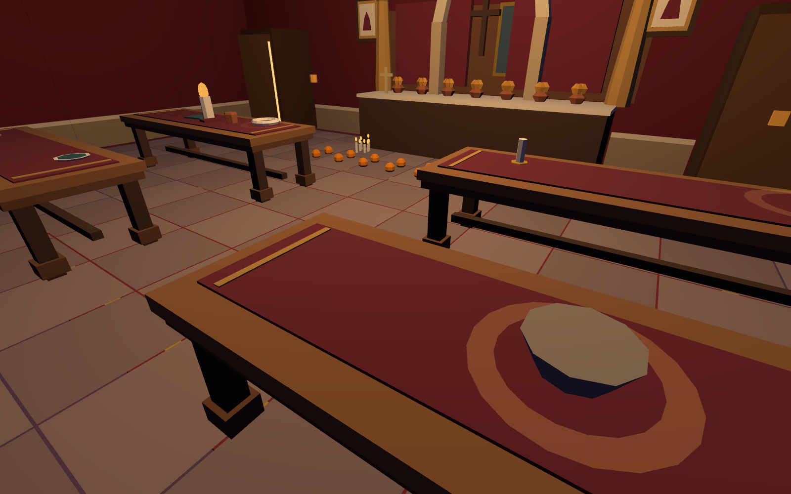
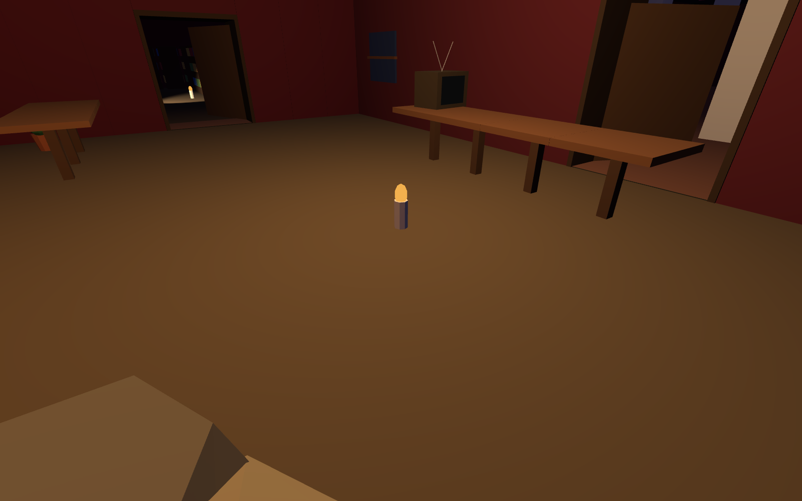
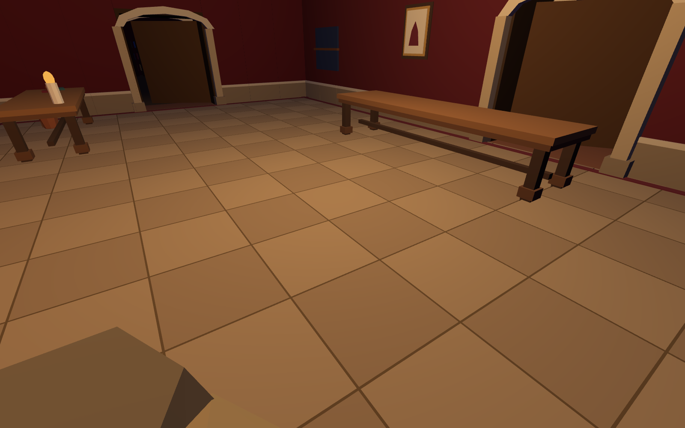
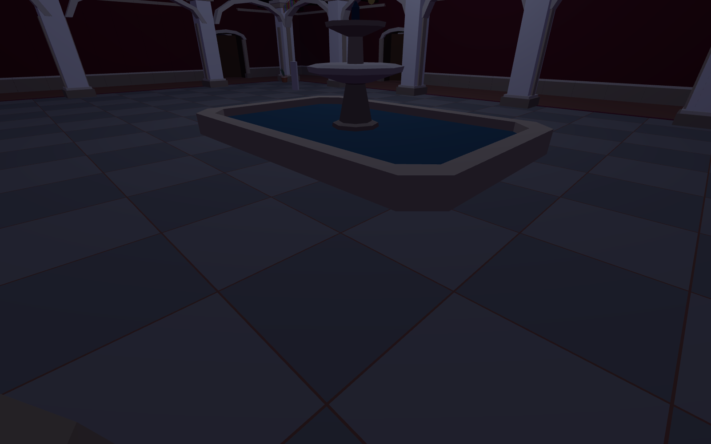
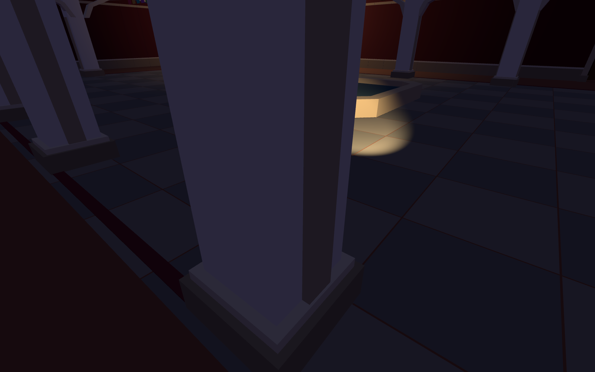

NOCHE DE ÁNIMAS · AVANCE 10Una casona con historia.
El terror sigue en la penumbra.
Primera muestra del recorrido: zaguán, corredor, patio y capilla. Piedra cálida, madera, tonos vino, cerámica y formas facetadas mate. Las imágenes son capturas del juego, con la luz de cada habitación encendida.
Ya están integradas las cinco apariencias de ánima aprobadas. La nube con ojos conserva su modelo original.
Capilla
Retablo con cruz y flores, muebles con estructura y corredores de tela. Un espacio de recogimiento con acentos vino y oro envejecido.
Antes Primera mejora
Primera mejora
Zaguán
Un acceso más vivido: consolas de madera, cerámica, cuadros y remates de piedra que dan escala a la casa.
Antes
Primera mejora
Patio
Fuente de dos niveles, estanque hueco y arquería angular. La luz nocturna conserva las siluetas de las columnas y los accesos.
Antes Primera mejora
Primera mejora
Corredor
Bases y capiteles de piedra, zócalos y arcos conectan las zonas de esta primera muestra.
Antes Primera mejora
Primera mejora
PC y celular
En Nueva noche puedes elegir calidad Automática, Ligera, Equilibrada o Alta. Automática usa Ligera en dispositivos táctiles. La elección se guarda en tu navegador. El rendimiento final se debe comprobar en equipos y celulares reales.